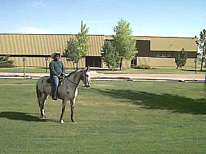

| Livestock Center  |
The Livestock Center is located 5 miles west of Rexburg and is home to the Animal Science, and Beef Production programs. This area provides students practical experience in the areas of animal science and ranch management. Trudi recently enrolled in an equestrian class. |